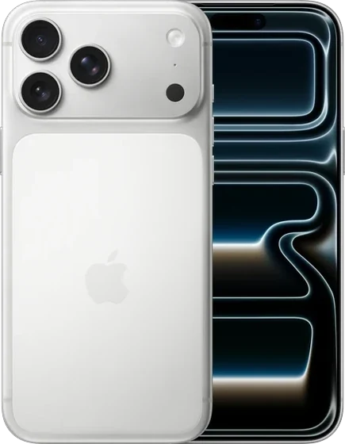
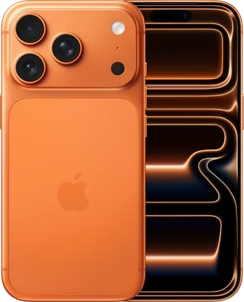
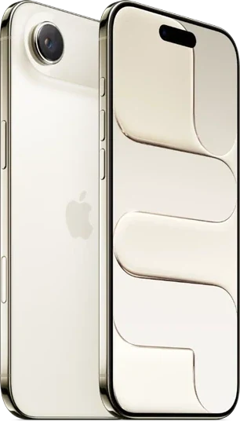
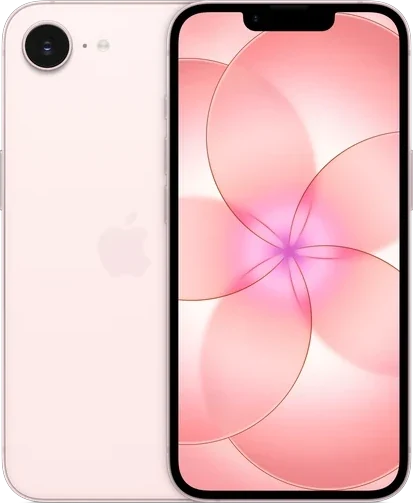

Pick yours. A few questions, then your offer.
iPhone 17 series

iPhone 17 Pro Max6.9-inch display
iPhone 17 Pro6.3-inch display
iPhone Air6.5-inch display iPhone 176.3-inch display
iPhone 17e6.1-inch displayNot sure? It's in Settings › General › About.